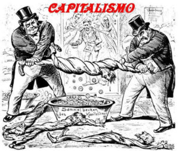

Questo termine si riferisce alla raccolta e all'investimento di grandi quantità di denaro da parte di imprenditori, capitalisti e investitori,sopratutto per finanziare innovazioni e la ricerca tecnologica. Gli imprenditori e gli investitori investirono una parte degli ingenti capitali che avevano accumulato nel tempo e che avevano aumentato grazie al continuo miglioramento delle loro aziende agricole, sempre più moderne e redditizie in altre attività produttive. Per esempio, finanziarono la costruzione di nuove strade e canali navigabili (su cui, magari, avrebbero potuto esigere un pedaggio) per facilitare la vendita dei propri prodotti agricoli; i capitali hanno sostenuto la creazione e lo sviluppo di nuove imprese,per esempio creando manifatture artigianali che, nel tempo, si trasformarono in industrie; creando nuovi posti di lavoro e generando ricchezza per l'economia nel suo complesso. Finanziarono i viaggi delle navi che commerciavano con i Paesi d'oltremare. Tutte queste attività collaterali, a loro volta, producevano altra ricchezza da reinvestire. Questi investimenti hanno permesso alle imprese di aumentare l'efficienza e la produttività, consentendo loro di produrre beni in quantità sempre maggiori e a costi inferiori. In sintesi, l'accumulo di capitali è stato un elemento fondamentale nella guida della Rivoluzione Industriale, sostenendo l'innovazione, la crescita economica e la trasformazione dei modi di produzione. possiamo dire che il capitalismo ha cambiato profondamente il mondo di oggi e ha lasciato un'impronta perenne nella storia dell'economia e dell'industria.